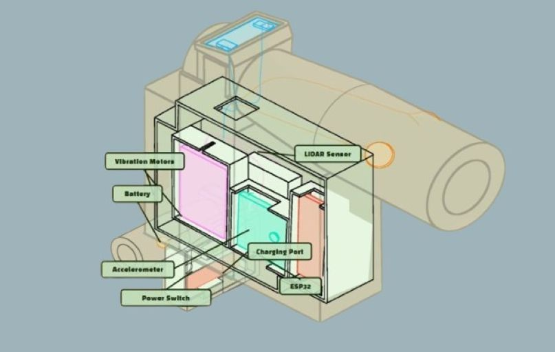
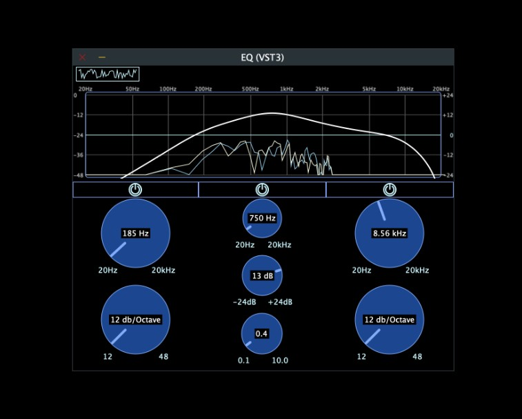

BlindSpot is an unobtrusive white cane attachment designed to help visually impaired users detect obstacles above the waist. Developed as part of an L3Harris-funded summer engineering program, the project resulted in a working prototype and a provisional patent. As software lead, I directed development of the sensing and feedback system. Traditional canes lack above-waist obstacle detection, while many smart canes compromise simplicity and affordability. BlindSpot addresses this gap with a lightweight, slip-on attachment that uses a multizonal time-of-flight sensor to scan up to two meters ahead, delivering vibration feedback that intensifies as obstacles approach. A single-button interface, motion-based power management, vibrational feedback, and an elastomeric structure preserve the familiarity of a standard white cane while enhancing navigation in crowded environments.

Using the JUCE framework in C++, I design and program custom audio plugins for use within digital audio workstations (DAWs) for music production. My work centers on real-time DSP implementation and responsive interface design, with a particular focus on improving the usability and visual clarity of existing audio plugins. Pictured here is a simple EQ plugin featuring low-cut, high-cut, and peak gain controls, allowing users to precisely shape their sound and easily bypass filters when needed.